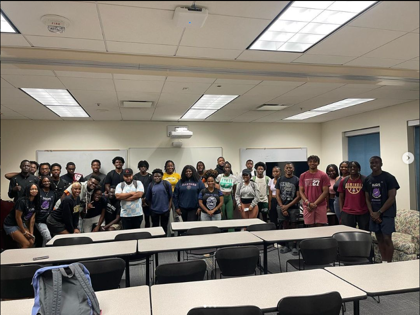
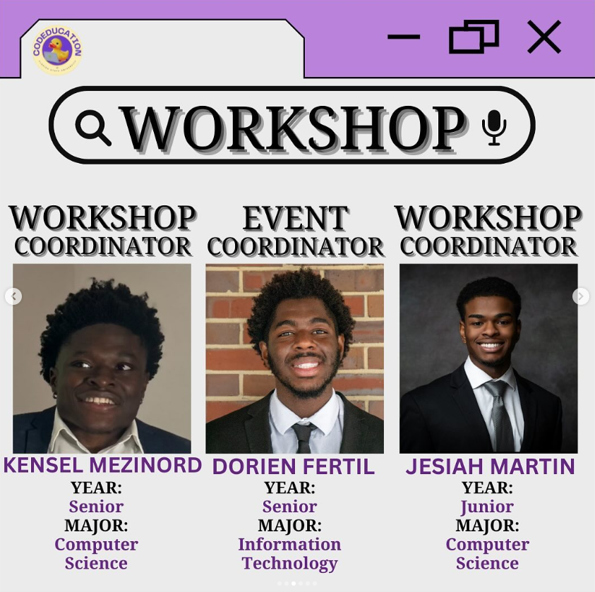
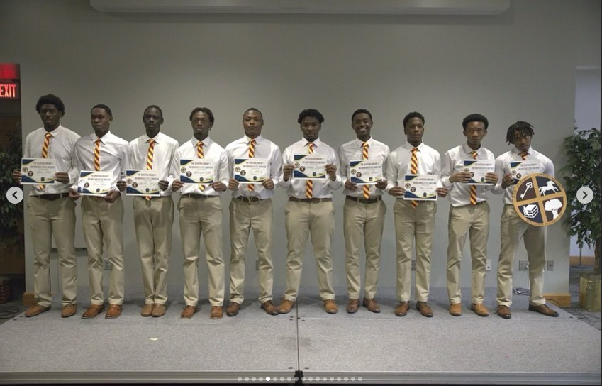

THe society of black in computing is a student led organization on the campus of FLorida State University with the intention of helping students of color learn to code and navigate the technology based majors on the campus. My role in this organizartion was the recruitment chair. My responsibilities in this position was to recruit new members and work on member realtions between current undergraduate and alumni. Some initiaties of mine included facilitating networking opportunities for Information Technology, cyber security, and computer engineering professionals by means of large networking events. I also Arranged trips to tech conferences for organizations to facilitate professional development and experience, some of these trips included the NSBE regional confrence and Afro Tech confrenece.
CodeEducation the largest student led Tech organization on the campus of Florida State University. Its aims are to promote technical knowledge and proffesionally develop its members. Acting as the event coordinator my job was to plan and organize the events we were to host. This involved managing the event dates and reservations for the organization ensuring events were conducted as planned. Some of the events i personally led involved spearheading resume and LinkedIn Workshop Event and Collaborating with other on campus organizations to host a campus wide event for national S.T.E.M Day.
In this competition i worked with a group of three to develop a business idea and plan with aims of opening the Orlando Magic fandbase to the international market. While working with my team we developed and a mobile application with features and commnity aspects with the aim to connect global audiences. With this idea we were able to win third place in this competition.
In this competition me and a team of three others were tasked with making a practical and new energy solution that utilized smart technology and incorperated smart vehichles. We came up with a smart home application that took advantage of IOT devices and hardware to real time track a homes energy usuage. With this data we devised a business plan with this data to promote services and appliences that maximise effeciency supplied through nextEra Energy. With this Idea my team and I were able to win first place.
Big Brother Little Brother Mentoring Program is a mentoring program with the mission of pairing freshman with upperclassman to better get used the transistion of highschool to college. Within this organization I participated in multiple volunteer and service efforts. Some of these include street cleanups, mentoring and counsling events, and food distributions. These were all done with the intention of aiding both underclassamn and those in need. My time in this organization allowed for me to learn essential skills collaboration, communication a leadership.
